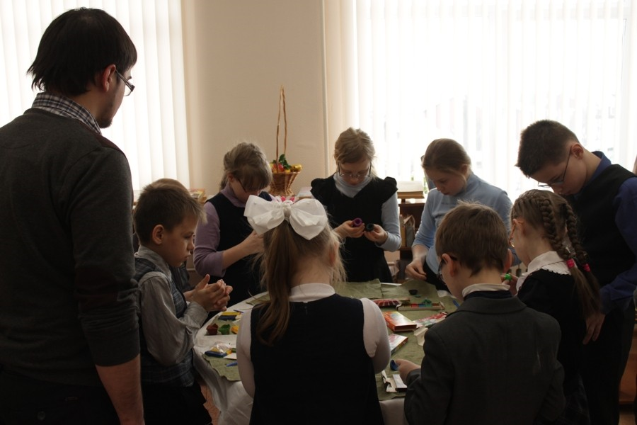

Музей археологии и этнографии Пермского Предуралья Пермского государственного педагогического университета (МАЭ ПГГПУ) — ведомственный музей, являющийся структурным подразделением исторического факультета Пермского государственного гуманитарно-педагогического университета. Был открыт в 2003 году. Основная функция Музея — учебная. Студенты исторического факультета, изучая курсы археологии и этнографии и связанных с ними дисциплин (например, спецкурсы), имеют возможность наглядного ознакомления с теми или иными предметами.Кроме этого, в Музее проводятся экскурсии для всех желающих. За последние годы с экспозицией ознакомились несколько сотен школьников, студентов и просто интересующихся историей родного края граждан.
В настоящий момент в Музее разрабатывается программа «Музей для всех». Суть её сводится к созданию всех условий для проведения экскурсий не только среди вышеуказанных категорий посетителей, но и среди людей, имеющих слабое зрение и слух. Подобная практика уже давно распространена в Европе и, безусловно, будет востребована в России и Перми.Особенностью Музея является то, что на некоторые предметы можно не только посмотреть, но и, в прямом смысле слова, «прикоснуться к древности». Камерность музея создает атмосферу уюта и приближает посетителя к нашим предкам. В период реконструкции Пермского краевого музея МАЭ был единственным общедоступным музеем Перми с развернутой археологической и этнографической экспозициями. Сегодня в распоряжении музея находятся два помещения: помещение под экспозицию и лаборатория археологических и этнографических исследований, хранение основных фондов музея, экспериментальная база.
Предметы коллекцииФонды музея насчитывают более 150 тыс. единиц хранения. В их основе лежат коллекции, полученные в результате раскопок археологических памятников разных эпох с территории Пермской области и Коми-Пермяцкого автономного округа, произведенных археологами Камской археолого-этнографической экспедиции ПГПУ, и коллекции, собранные на этой же территории во время этнографических и диалектологических экспедицийэтнографами и фольклористами университета. Самым обширным является собрание предметов археологии — около 130 тыс. — предметы орудий труда и быта, украшения, предметы вооружения, воинского и охотничьего снаряжения, предметы древних культов, древняя металлическая и керамическая посуда.
Тематика витрин музея
Экскурсии в Музее проводятся для всех желающих. В настоящий момент в Музее разрабатывается программа "Музей для всех". Суть её сводится к созданию всех условий для различных категорий посетителей. Музей археологии и этнографии ждёт своих посетителей с понедельника по пятницу. К сожалению, поскольку аудитория музея используется в учебных целях, необходимо заранее согласовывать день и время экскурсии. Занятие призвано наглядно продемонстрировать посетителям как строилась повседневность древнего человека. Детям будут предложены для непосредственного ознакомления (можно потрогать) подлинные музейные экспонаты, которые позволят составить представление о жизни наших предков в то далекое время.
Музей предоставляет возможность представить, как экспонаты воспринимают незрячие посетители. Занятие призвано продемонстрировать посетителям возможность использования музейных предметов в экскурсиях для незрячих и слабовидящих посетителей. В ходе занятия экскурсанты сами "примерят на себя" образ посетителя - инвалида по зрению. Им будут предложены для тактильного ознакомления предметы из фондов нашего Музея. После знакомства с этими предметами на ощупь, можно будет сравнить, какую информацию они смогли усвоить таким образом, и на сколько она отличается от зрительной.
В Пермском гуманитарно-педагогическом университете сейчас очень активно занимаются проведением экскурсий для незрячих детей и взрослых. Краеведческий музей при ВУЗе проводит такую практику, где любой человек, независимо от своих возможностей, может прикоснуться к истории, почувствовать себя ее частью. Музей сотрудничает с несколькими школами-интернатами для слабовидящих и незрячих, а также с Пермской организацией общества слепых. К сожалению, не все могут свободно любоваться экспонатами – в Перми проживает 4500 слабовидящих, из которых 207 – это дети. В пермском государственном гуманитарно-педагогическом университете решили найти выход из этой проблемы. Краеведческий музей при вузе открыл специальную программу – музейную терапию. Студенты устраивают для ребят экскурсии и мастер-классы. Так как у слабовидящих и слепых обостряются другие органы чувств, они умеют «видеть» руками. Благодаря разработке местных ученых на экскурсии в этот музей смогут ходить слабовидящие и незрячие люди. На 3D-принтере выполняется точная копия, выполненная из гипсополимера. Прочность материала позволит открыто экспонировать даже очень хрупкие и разрушающиеся предметы. Спрограммированную на компьютере виртуальную модель ученые смогут измерить и рассмотреть во всех подробностях без непосредственного контакта с оригиналом. Таким образом, даже уничтоженный временем предмет останется пригодным для ознакомления и изучения в полном объёме, а не только по фотографиям и рисункам.
Все это открывает большие возможности для проведения экскурсий. Из-за своей хрупкости очень многие артефакты отделены от посетителя стеклом. Теперь при помощи 3D-технологий копирования в музее планируют выйти на новый уровень общения «экспонат-экскурсант». Копии предметов можно будет потрогать. При 3D-копировании рельеф вещи передается очень точно, а значит и восприятие будет более полным. Аналогичного рода деятельность реализуется, например, в Венгерском национальном музее, где к копиям предметов приложена ещё и азбука Брайля.
Заведующий Музеем археологии и этнографии ПГГПУ Вострокнутов Артем Викторович разработал проект «Вслед за древним человеком: археолого-этнографическое путешествие с закрытыми глазами», который победил в номинации «Образовательная программа». Суть проекта заключается в ознакомлении незрячих и слабовидящих граждан разного возраста (учащихся школы-интерната для незрячих и слабовидящих детей и членов Пермского отделения ВОС) с археологией и этнографией Пермского края. Цель проекта – создание условий для формирования целостного представления о древней истории и культуре населения Пермского края (при помощи археологии и этнографии) у незрячих и слабовидящих жителей г. Перми. В данный момент идет активная реализация данный идей. Также необходимо отметить работу работников музея со школами-интернами. Периодически происходят разнообразные экскурсии, в которых детям преподносят различные 3D-копии предметов. Ребята с интересом разглядывают и ощупывают предметы, связанные с жизнью человека. Любая встреча с детьми, возможность рассказать им о той сфере деятельности, которой занимается музей, это целая корзина положительных эмоций.
В настоящее время музей активно участвует в различных проектах. Музей археологи и этнографии ПГГПУ совместно с крупнейшими музеями Перми реализует инклюзивный проект «Межмузейная карта доступности». Музейные работники пермских музеев совместно со специалистами по доступной среде и родителями детей с инвалидностью реализуют информационный проект с целью обобщения всего опыта работы пермских музеев с людьми с ОВЗ. Консультантами проекта стали люди с инвалидностью. Итогом проекта будет издание и распространение буклета, в котором информирующего о возможностях взаимодействия музеев и посетителей с инвалидностью. Кроме условий архитектурной, транспортной доступности музеев, в буклете будут представлены образовательные программы и экскурсии.
Проект «Коллекционируй музеи» объединил семь крупнейших музеев города Перми для того, чтобы вместе вовлечь семьи, воспитывающие детей с особенностями ментального развития, в музейную жизнь города. Для знакомства со своими экспозициями, музеи-участники разработали путеводитель, который поможет родителям или сопровождающим ответить на самые распространенные детские вопросы. В основе каждого путеводителя – короткий рассказ о музее с поясняющими яркими рисунками и творческие задания, в которых используется какой-либо предмет, обладающий определенными свойствами, признаками и вызывающий прямые ассоциации с музейными экспонатами разных типов. Эти предметы ребята-участники получат в качестве небольших сувениров, которые после прохождения всего музейного путешествия можно собрать в собственную «музейную» коллекцию. Ребята из специализированных школ–интернатов, которые не имеют возможности прийти в музей самостоятельно, смогут посетить музеи с групповыми путеводителями. Чтобы музейное путешествие было приятным, легким и комфортным, был разработан буклет для родителей детей с особенностями ментального развития. В буклете авторы напоминают о значимости посещения музеев, а также дают советы о том, как правильно организовать и провести с ребенком время в музее.
Помимо Музея археологии и этнографии В проекте принимают участие:археологическая практика 1-го курса историческиого факультета
Экспедиция – неотъемлемая часть археологической науки. В современном массовом сознании археология ассоциируется именно с экспедицией, ее увлекательными открытиями, романтикой полевой жизни. Особенно интересны экспедиции, вобравшие в себя многолетний опыт нескольких поколений ученых. Одна из таких – Камская археологическая экспедиция. Организационной основой для ее формирования стала созданная еще в 1983 г. Камская археолого-этнографическая экспедиция. Исследовательская программа научной школы профессора А.М. Белавина предусматривает археологическое и этнологическое изучение пространственных систем и различных проявлений их содержания, нашедшее отражение в разноплановых комплексах материальной, духовной, экологической и соционормативной культуры. Это подразумевает исследование культур и культурных традиций региона, процессов их формирования и трансформации, взаимодействия и взаимовлияния, связанных с ними обществ, технологий, а также соответствующих когнитивных систем.
Огромную роль в качественной подготовке будущих педагогов играет обязательная выездная учебная (археологическая) практика . Согласно графику учебного процесса, полевая археологическая практика стоит на первом году обучения бакалавров и длится 24 дня! Важно отметить, что добровольное участие в практике регулярно принимают студенты старших курсов, интересующиеся археологией, они, выезжая в поле вместе с первокурсниками, играют для них роль старших товарищей, наставников. Наиболее талантливые и ответственные старшекурсники участвуют в раскопках уже в статусе младших научных сотрудников. Уже в течение нескольких лет студенты практиканты участвуют в раскопках Рождественского археологического комплекса в Карагайском районе Пермского края. В период 1985, 1990–1993 гг. А.М. Белавин осуществлял руководство полевой археологической практикой студентов на этом памятнике. В настоящее время руководителем практики является доктор исторических наук, профессор - Наталья Борисовна Крыласова.
Виды деятельности студентов на археологической практикеПолученные материалы после их научной обработки поступают на хранение в государственные музеи Пермского края, они служат основанием для исследований аспирантов, магистрантов и бакалавров исторического факультета университета. Кроме раскапываний памятника студентов ожидает традиционное посвящение в археологи, различные спортивные и интеллектуальные игры, ранний подъем, палаточный быт и многое другое. Также студенты исторического факультета выезжают на археологические памятники Чашкинское озера (у г.Березники) , Баяновский могильник (Добрянский район) , Плотниковский могильник (Кудымкарский район), Родановское городище ( Юсьвинский район), Митинский могильник (Кочёвский район). Под впечатлением полевой практики некоторые студенты принимают решения писать курсовые работы по археологической тематике. Результаты своих первых научных изысканий студенты имеют возможность представить на ежегодной конференции «Человек, общество, культура: современное и историческое измерение», организуемой факультетом.
.jpg)
.jpg)
.jpg)
.jpg)
.jpg)
.jpg)
.jpg)